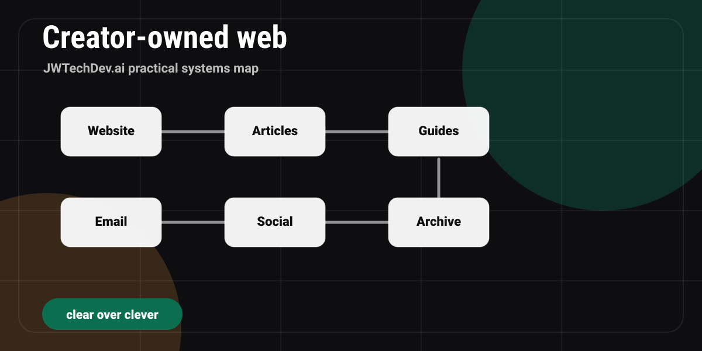

How can creators use static websites to avoid platform lock-in?
A creator-owned static website strategy for reducing platform lock-in, building an email list, publishing durable resources, and keeping operating costs low.

Quick answer
Creators can avoid platform lock-in by making a static website the home base, using social platforms for distribution, collecting an owned audience through email or inquiry forms, and keeping content portable in plain files.
The platform lock-in problem
Social platforms are useful, but they are not headquarters. Algorithms change. Links get buried. Accounts get restricted. Video formats shift. A creator who only builds on rented platforms is always one policy change away from losing reach.
A static website gives the creator a durable home base. It can host articles, guides, portfolios, contact paths, resource pages, and a clear brand story without requiring a monthly backend bill.
What a static site should own
Positioning
Who you help, what you explain, and why people should trust you.
Articles
Durable answers to questions your audience is already asking.
Resources
Guides, checklists, templates, and waitlists that turn attention into relationship.
Contact path
A form or inquiry flow that captures intent without forcing a social DM.
Why static first works
Static sites are fast, simple, cheap to host, and easy to version. For many creators, the early business problem is not database scale. It is clarity, consistency, portability, and trust.
You can still add backend services later. The trick is not adding them before the use case earns the complexity.
The local-first capture pattern
A static website can present the form and route the inquiry while a local Mac mini or approved backend stores CSV records. That keeps the public site simple and lets the creator decide when a real hosted database is worth it.
The approval gate matters. Do not expose private machines or storage paths publicly without a secure access plan.
Creator site priority picker
What is the weakest part of your creator system?
Static creator hub checklist
0 of 6 checkedFAQ
Is a static website enough for a creator business?
For many early creator systems, yes. Static sites are strong for brand, content, guides, and inquiry flows. Add dynamic services when the workflow proves it needs them.
What should live on social instead?
Short discovery content, behind-the-scenes clips, conversations, and distribution. Keep durable resources on the owned site.
Can a static site collect leads?
It can route inquiries through email, form providers, or an approved local capture endpoint. The storage decision should be intentional.
Want the working resource?
Request the Codex Content-engine Workflow to turn one idea into articles, scripts, posts, and guide assets.
Request access